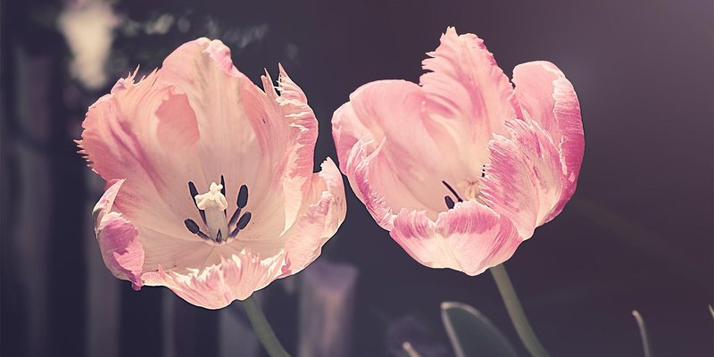
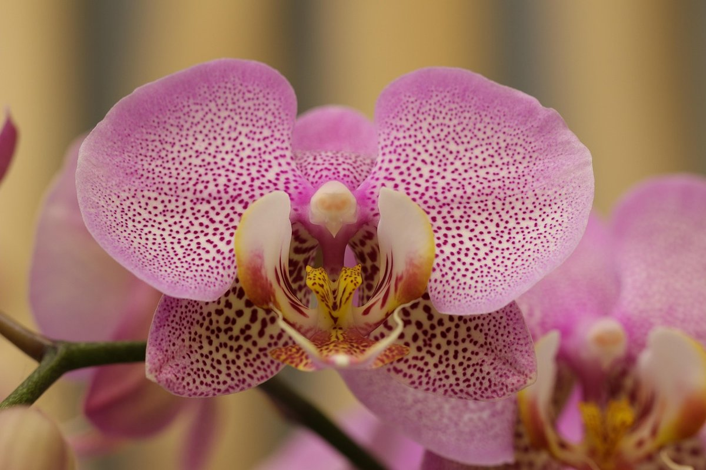
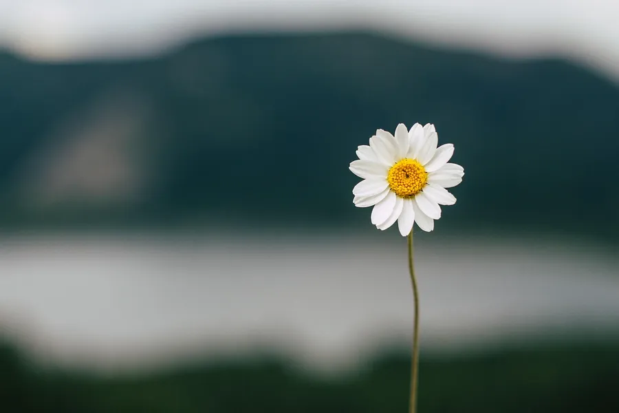

Pink Tulips
I like the ruffled edges on these tulips!

Pink Orchid
The spots on the petals are a lot easier to see up close.

White Daisy
Just a simple white daisy by the water.

I'm taking a floral design class, so I wanted to do flowers for this assignment.
I like the ruffled edges on these tulips!

The spots on the petals are a lot easier to see up close.

Just a simple white daisy by the water.
